Aerodynamics Engineer
Falcon E Racing · Sri Lanka’s First Formula Student Car Project
Served as an Aerodynamics Engineer for Falcon E Racing, Sri Lanka’s first Formula Student car project, leading the aerodynamic package development for the team’s second vehicle, E2. My work covered CFD-based aerodynamic optimisation, composite manufacturing, wing construction, assembly, and vehicle integration.
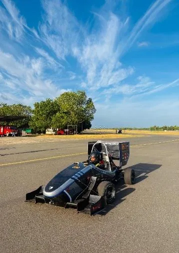
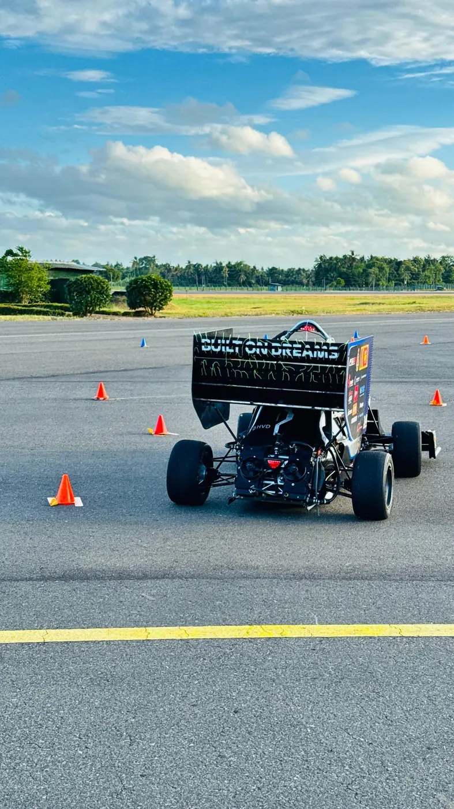
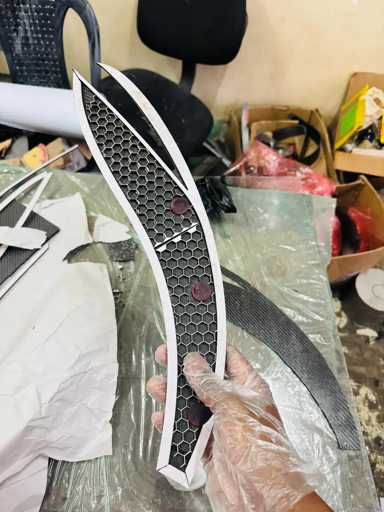
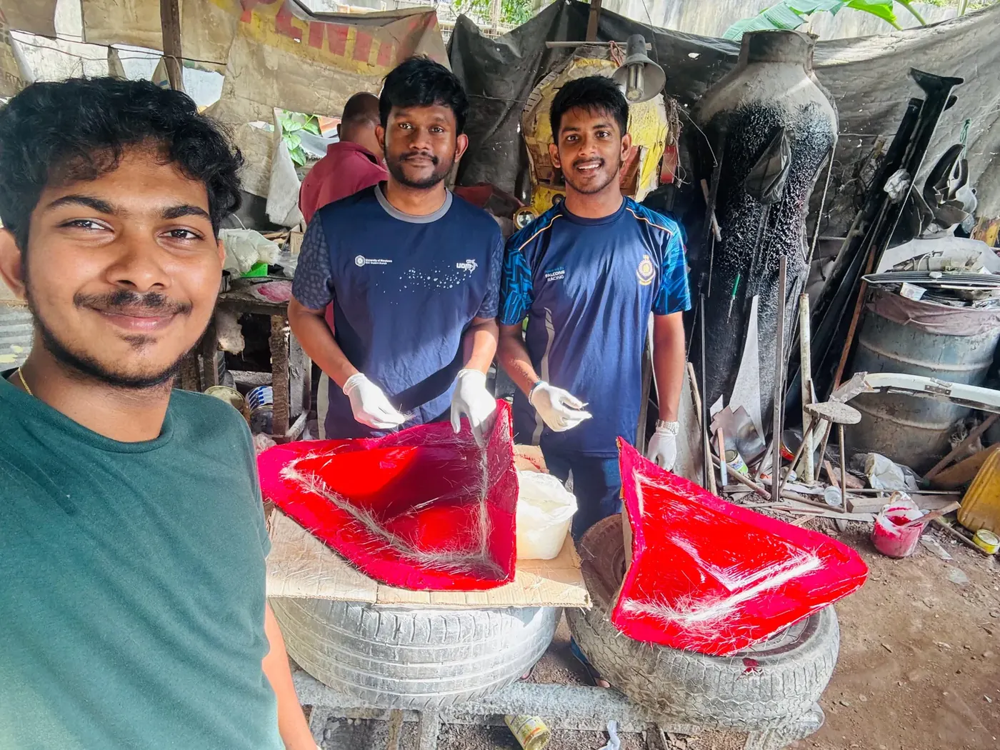
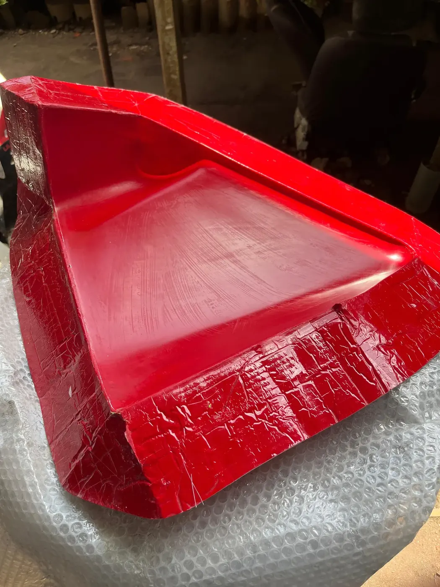
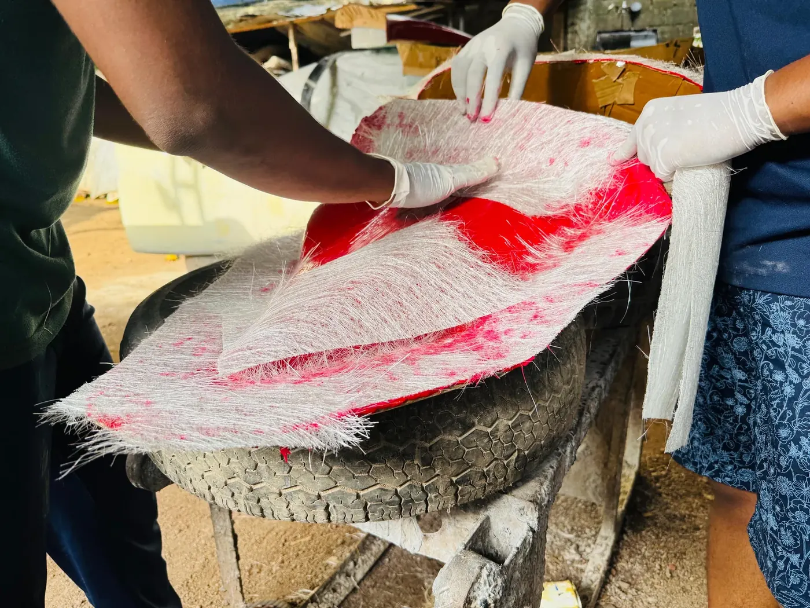
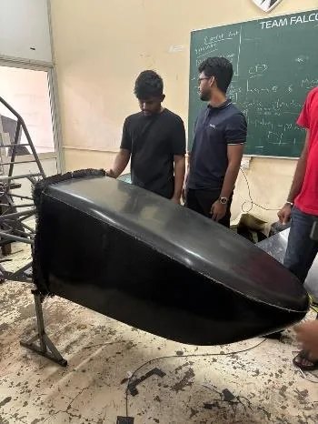
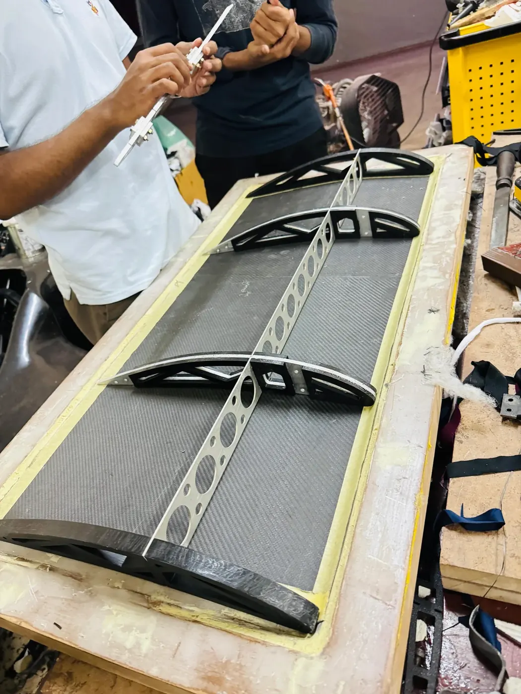
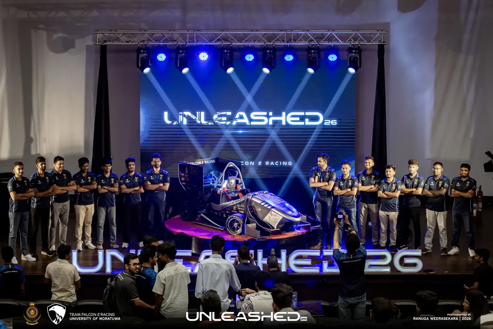
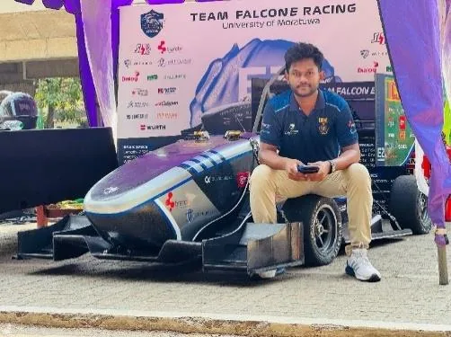
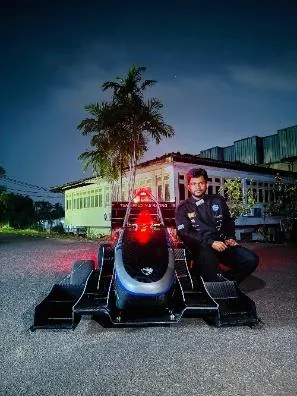
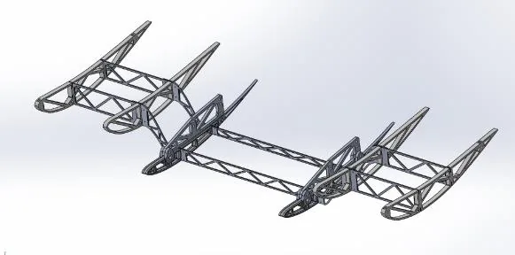
Role and Development Scope
Served as an Aerodynamics Engineer for Falcon E Racing, Sri Lanka’s first Formula Student car project, and led the aerodynamic package development for the team’s second vehicle, E2. My role covered the complete development cycle, from aerodynamic concept generation and CFD-based optimisation to composite manufacturing, assembly, and vehicle integration.
Four-Element Front-Wing Design and CFD Analysis
A major part of my work involved leading the aerodynamic design and optimisation of a four-element front wing using two-dimensional steady-state CFD simulations in ANSYS Fluent. The computational domain incorporated the front section of the tyre with a rotating-wall boundary condition to represent the interaction between the front-wing wake and tyre flow field more accurately.
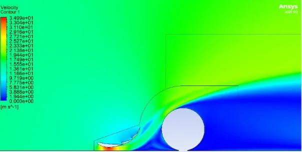
Multi-Objective Genetic Algorithm Optimisation
I applied Multi-Objective Genetic Algorithm optimisation to investigate the influence of key design variables, including angle of attack, ground clearance, element gaps, and overlaps. The optimisation aimed to maximise downforce and aerodynamic efficiency while directing airflow over and around the front tyre to reduce wake formation and tyre-induced drag. The simulation results supported data-driven decisions throughout the front-wing development process.
Wider Aerodynamic Package Development
I also led the design and development of the wider aerodynamic package, including the front wing, rear wing, aerodynamic body elements, and their integration with the vehicle. The designs were evaluated by considering downforce generation, drag, aerodynamic balance, structural feasibility, manufacturing limitations, ground clearance, and Formula Student regulations.
Manufacturing and Assembly Leadership
My responsibilities extended beyond simulation and design. I led the manufacturing and assembly activities, including:
- Fabrication and preparation of fibreglass moulds
- Mould surface preparation and application of release systems
- Carbon-fibre layup and composite component fabrication
- Production of 3D-printed aerofoil ribs
- Construction of the front and rear wing elements
- Alignment and assembly of the multi-element wing sections
- Installation and integration of the completed aerodynamic package with the vehicle
Skills Strengthened
This experience gave me responsibility for the complete aerodynamic development cycle: conceptual design, CAD modelling, CFD simulation, numerical optimisation, composite manufacturing, assembly, and vehicle integration. It strengthened my expertise in computational aerodynamics, ANSYS Fluent, CAD, composite fabrication, design optimisation, technical leadership, teamwork, and multidisciplinary engineering decision-making.